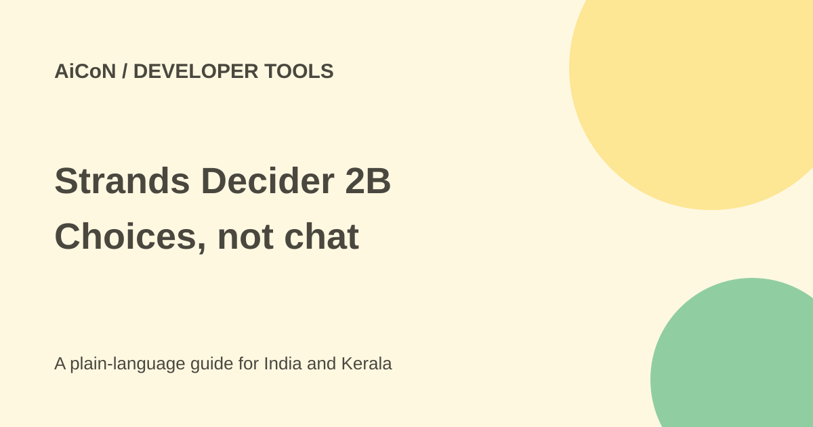

Strands Decider 2B: chooses answers, not chat
Strands Decider 2B is a small decision model from the AWS Strands team. It selects among answers or assigns scores rather than writing a chatbot reply. The code is Apache 2.0 licensed and weights are available.

What is a decision model?
You supply a state, a question and possible answers. For example, an invented support request can be routed to billing, sales or technical help. The model chooses an option and returns a confidence score.
A score is an estimate, not proof. If the correct department is missing from the supplied choices, the model can still pick an unsuitable option. Good task design and independent checks matter as much as speed.
What the team measured
The launch reports a median of around 115 milliseconds on an NVIDIA RTX 3090, with latency increasing as task size grows. It also reports around 153 milliseconds for small tasks on an M3 MacBook. These are the team's measurements, not a promised speed on your laptop.
The code supports local CPU or GPU work. The current repository also describes Apple-silicon support and newer checkpoints; use its current device-specific installation instructions. The repository describes the model as about 1.9 billion parameters under the 2B product name. Its benchmark results and confidence claims should be checked on your own language, task and data.
Where it might help
The team lists routing, tool selection, evaluations, guardrails and context work. A hybrid system can use a small decision model for simple choices and a larger model for harder tasks.
Do not use one model score as the only control for payments, private data access or harmful actions. The launch's intervention example is explicitly an illustration, not a recommended complete security policy.
How to test locally
- Read the official repository and check its current requirements and licence.
- Create a separate Python environment, not your main work environment.
- Install the official strands-decider package following its documentation.
- Download the intended model weights from the official linked Hugging Face source.
- Use invented sample text and give all plausible answer choices.
- Measure accuracy, confidence and speed on a labelled test set that resembles your real use.
- Include ambiguous inputs, spelling errors and Malayalam examples if your users need them.
- Keep uncertain or consequential decisions for a person and log failures before considering deployment.
Free or paid?
The code is Apache 2.0 and can run locally. Your computer, electricity, storage and any rented machine still cost money. Example workflows that call Amazon Bedrock or another hosted model can also incur that provider's charges.
No fixed rupee cost covers every setup. For a student or developer in India, start with existing suitable hardware rather than renting a large GPU on the assumption that published latency is guaranteed.
What changed since the original post?
We confirmed the repository licence and separated local decision-model use from examples that also call a paid hosted model. The reported latency is kept tied to the team's hardware and task size. The code has gained further checkpoint and device instructions since the launch. No benchmark was reproduced here.
Frequently asked questions
Is it a chatbot?
No. Its job is selecting answers and scoring choices.
Does high confidence mean correct?
No. Test calibration and review errors on real tasks.
Can it protect a workflow alone?
Do not treat it as the sole safety boundary for consequential actions.
Sources: Strands team announcement · Official code and licence · Official model checkpoint. Checked 7 October 2026.